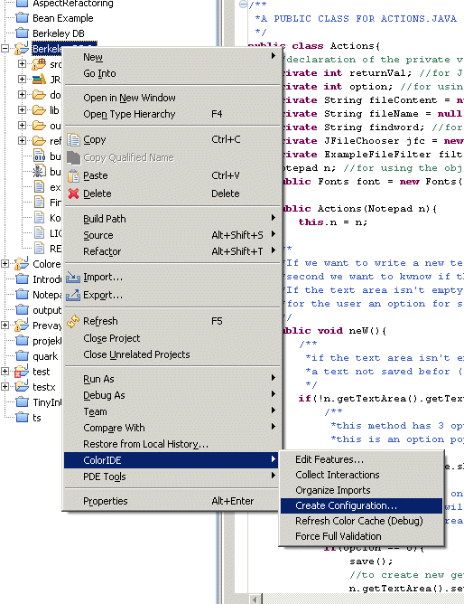

<!DOCTYPE html PUBLIC "-//W3C//DTD XHTML 1.0 Transitional//EN" "http://www.w3.org/TR/xhtml1/DTD/xhtml1-transitional.dtd">
<html xmlns="http://www.w3.org/1999/xhtml">
<head>

  <link rel="shortcut icon" href="favicon.ico" />

  <meta http-equiv="Content-Type" content="text/html; charset=ISO-8859-15" />
  <title>CIDE: Feature-Oriented Analysis and Decomposition of
Legacy Applications</title>


  <link href="ar.css" rel="stylesheet" type="text/css" />

  <meta content="Christian Kaestner" name="author" />

</head>


<body>


<h1 align="center">CIDE: Feature-Oriented Analysis and
Decomposition of
Legacy Code
</h1>

<br />

<h5 align="center">Latest Version November 10th, 2008</h5>

<br style="clear: left;" />

<div id="nav">
<div class="link"><a href="#intro">Description</a></div>

<a> </a>
<div class="link"><a href="#publications">Publications</a></div>

<div class="link"><a href="#howto">Howto</a></div>

<div class="link"><a href="#download">Download</a></div>

<a href="#contact">
<div class="link">Contact</div>

</a>
<p align="center"><br />

<a href="http://www.uni-magdeburg.de/unv_eng.html"></a></p>

<p align="center"><a href="http://wwwiti.cs.uni-magdeburg.de/iti_db/index_eng.html"></a></p>

</div>

<div class="con">
<h2><a name="intro" id="introduction"></a>Description</h2>

<p class="abstract">The <em style="font-weight: bold;">Colored
Integrated
Development Environment
(CIDE</em><em>, formerly also ColoredIDE</em><em style="font-weight: bold;">)</em> is a software
product line tool for
analyzing and
decomposing legacy code. It follows the paradigm of <span style="font-style: italic;">virtual separation
of concerns</span>, i.e., developers do not physically extract
the
feature
code, but just annotate code fragments inside the original code and use
tool support for views and navigation. For annotation, background
colors are used, so that code fragments belonging to a feature are
shown with a background color; hence the name.
</p>

<p class="abstract">CIDE is a research project. The
current prototype
is available for download on this site. It is used in various branches
of software engineering research for feature-oriented development,
e.g., granularity of feature extensions, safe composition, feature
scoping, extractive SPL adoption model, language-independent
feature-decomposition, feature interaction analysis, feature
location/feature mining, feature modularity, and many more.
</p>

<p class="abstract"></p>

<p class="abstract">There are currently <span style="font-weight: bold;">two versions</span>
of
CIDE, an older Java version, and a newer language-independent version.
Unfortunatelly, not all features from the old version have been
migrated yet, therefore both versions are available for download. The
following list gives an overview of current and planned features.</p>

<br />

<table style="text-align: left;" border="0" cellpadding="2" cellspacing="2">

  <tbody>

    <tr class="th">

      <th style="vertical-align: top; font-style: italic;">Feature<br />

      </th>

      <th style="vertical-align: top; font-style: italic;">Older
Java
CIDE<br />

      </th>

      <th style="vertical-align: top; font-style: italic;">Newer
Language-Independent
CIDE<br />

      </th>

    </tr>

    <tr>

      <td style="vertical-align: top;">Feature Models<br />

      </td>

      <td style="vertical-align: top;">Simple Feature List<br />

      </td>

      <td style="vertical-align: top;">Feature List, <a href="http://www.cs.utexas.edu/users/dsb/fopdocs/guidsl.html">Guidsl</a>
Model or <a href="http://www.pure-systems.com">pure::variants</a>
connector</td>

    </tr>

    <tr>

      <td style="vertical-align: top;">Assigning Features
to Text
Fragments based on underlying AST<br />

      </td>

      <td style="vertical-align: top;">available for Java<br />

      </td>

      <td style="vertical-align: top;">available for
several languages<br />

      </td>

    </tr>

    <tr>

      <td style="vertical-align: top;">ASTView to see the
structure of
the document<br />

      </td>

      <td style="vertical-align: top;">available</td>

      <td style="vertical-align: top;">available</td>

    </tr>

    <tr>

      <td style="vertical-align: top;">Advanced Editor
with Syntax
Highlighting, Content Asssistant, etc<br />

      </td>

      <td style="vertical-align: top;">available for Java<br />

      </td>

      <td style="vertical-align: top;">available for Java </td>

    </tr>

    <tr>

      <td style="vertical-align: top;">Ensures syntactic
correctness of
all variants (all configurations can be parsed)<br />

      </td>

      <td style="vertical-align: top;">available</td>

      <td style="vertical-align: top;">available</td>

    </tr>

    <tr>

      <td style="vertical-align: top;">Type-checking of
whole SPL (all
configurations can be compiled)<br />

      </td>

      <td style="vertical-align: top;">limited<br />

      </td>

      <td style="vertical-align: top;">not migrated yet<br />

      </td>

    </tr>

    <tr>

      <td style="vertical-align: top;">Interaction
Statistics<br />

      </td>

      <td style="vertical-align: top;">available</td>

      <td style="vertical-align: top;">available<br />

      </td>

    </tr>

    <tr>

      <td style="vertical-align: top;">Feature Projection
(hide
irrelevant features)<br />

      </td>

      <td style="vertical-align: top;">available</td>

      <td style="vertical-align: top;">Java editor only<br />

      </td>

    </tr>

    <tr>

      <td style="vertical-align: top;">Export to AspectJ
and AHEAD<br />

      </td>

      <td style="vertical-align: top;">prototype<br />

      </td>

      <td style="vertical-align: top;">not migrated yet<br />

      </td>

    </tr>

    <tr>

      <td style="vertical-align: top;">Coloring whole
files and
directories<br />

      </td>

      <td style="vertical-align: top;">-<br />

      </td>

      <td style="vertical-align: top;">available<br />

      </td>

    </tr>

  </tbody>
</table>

<br />

<h2><a name="publications"></a>Publications</h2>

<br />

<dl>

  <dt>[<a name="KAT:ViSPLE08">KTA08</a>] </dt>

  <dd>Christian K&auml;stner, Salvador Trujillo, and Sven
Apel. <b>Visualizing Software Product Line Variabilities in
Source Code</b>. In <em>Proceedings of the 2nd
International SPLC Workshop on Visualisation in Software Product Line
Engineering (ViSPLE)</em> (Limerick, Ireland), September 2008. <br />

[ <a href="./kaestner_bib.html#KAT:ViSPLE08">bib</a>
| <a href="http://wwwiti.cs.uni-magdeburg.de/%7Eckaestne/ViSPLE08.pdf">.pdf</a>
]
    <blockquote><font size="-1">Implementing
software product lines is
a challenging task. Depending on the implementation technique the code
that realizes a feature is often scattered across multiple code units.
This way it becomes difficult to trace features in source code which
hinders maintenance and evolution. While previous effort on
visualization technologies in software product lines has focused mainly
on the feature model, we suggest tool support for feature traceability
in the code base. With our tool CIDE, we propose an approach based on
filters and views on source code in order to visualize and trace
features in source code. </font></blockquote>

  </dd>

  <dt>[<a name="KKB:GPCE08">KKB08</a>] </dt>

  <dd>Chang Hwan&nbsp;Peter Kim, Christian K&auml;stner,
and Don Batory. <b>On the Modularity of Feature Interactions</b>.
In <em>Proceedings of the 7th International Conference on
Generative Programming and Component Engineering (GPCE)</em>
(Nashville, TN, USA). ACM Press, October 2008. <br />

[ <a href="./kaestner_bib.html#KKB:GPCE08">bib</a>
| <a href="http://wwwiti.cs.uni-magdeburg.de/%7Eckaestne/GPCE08-Kim.pdf">.pdf</a>
]
    <blockquote><font size="-1">Feature modules are
the building blocks of programs in software
product lines (SPLs). A foundational assumption of feature-based
program synthesis is that features are composed in a predefined
order. Recent work on virtual separation of concerns reveals a new
model of feature interactions that shows that feature modules can be
quantized as compositions of smaller modules called derivatives.
We present this model and examine some of its unintuitive consequences,
namely, that (1) a given program can be reconstructed by
composing features in any order, and (2) the contents of a feature
module (as expressed as a composition of derivatives) is determined
automatically by a feature order. We show that different
orders allow one to `adjust' the contents of a feature module to
isolate
and study the impact of interactions that a feature has with
other features. Using derivatives, we show the utility of generalizing
safe composition (SC), a basic analysis of SPLs that verifies
program type-safety, to prove that every legal composition of
derivatives
(and thus any composition order of features) produces a typesafe
program, which is a much stronger SC property. </font></blockquote>

  </dd>

  <dt>[<a name="KA:ASE08">KA08</a>] </dt>

  <dd class="selected">Christian K&auml;stner and Sven
Apel. <b>Type-checking Software Product Lines - A Formal Approach</b>.
In <em>Proceedings on the 23rd IEEE/ACM International Conference
on Automated Software Engineering (ASE)</em> (L'Aquila, Italy).
IEEE Computer Society, September 2008.<br />

[ <a href="./kaestner_bib.html#KA:ASE08">bib</a> | <a href="http://wwwiti.cs.uni-magdeburg.de/%7Eckaestne/ASE08.pdf">.pdf</a>
]
    <blockquote><font size="-1">A software product
line (SPL) is an efficient means
to generate a family of program variants for a domain from
a single code base. However, because of the potentially high
number of possible program variants, it is difficult to test all
variants and ensure properties like type-safety for the entire SPL.
While first steps to type-check an entire SPL have been taken,
they are informal and incomplete. In this paper, we extend the
Featherweight Java (FJ) calculus with feature annotations to be
used for SPLs. By extending FJs type system, we guarantee that
- given a well-typed SPL - all possible program variants are welltyped
as well. We show how results from this formalization reflect
and help implementing our own language-independent SPL tool
CIDE. </font></blockquote>

  </dd>

  <dt>[<a name="KATKB:MD08">KAT<sup>+</sup>08</a>]
  </dt>

  <dd>Christian K&auml;stner, Sven Apel, Salvador Trujillo,
Martin
Kuhlemann, and
Don Batory. Language-Independent Safe Decomposition of
Legacy&nbsp;Applications into Features. Technical
Report&nbsp;2, School
of Computer Science, University of Magdeburg, Germany, March 2008.<br />

[ <a href="http://wwwiti.cs.uni-magdeburg.de/%7Eckaestne/kaestner_bib.html#KATKB:MD08">bib</a>
| <a href="http://wwwiti.cs.uni-magdeburg.de/%7Eckaestne/gcidetech.pdf">.pdf</a>
]
    <blockquote><font size="-1">Software product
lines (SPL) usually
consist of code and
non-code artifacts written in different languages. Often
they are created by decomposing legacy applications into
features. To handle different artifacts uniformly (code, documentation,
models, etc.), current SPL technologies either
use an approach that is so general that it works on character
or token level, but can easily introduce subtle errors; or they
provide specialized tools for a low number of languages.
Syntax errors that only occur in certain variants are difficult
to detect, as the exploding number of variants makes a manual
testing unfeasible. In this paper, we present CIDE, an
generic SPL tool that can ensure syntactic correctness for
all variants. We show CIDE&rsquo;s underlying mechanism that
abstracts from textual representation and generalize it from
Java to arbitrary languages. Furthermore, we automate the
generation of safe plug-ins for additional languages from
annotated grammars. To demonstrate CIDE&rsquo;s capabilities,
we applied it to a series of case studies with artifacts from
different languages, including Java, C#, C, Haskell, ANTLR,
and XML. </font></blockquote>

  </dd>

  <dt>[<a name="KAK:ICSE08">KAK08</a>] </dt>

  <dd class="selected">Christian K&auml;stner, Sven
Apel, and Martin
Kuhlemann.
Granularity in
software product lines. In <em>Proceedings of the International
Conference on Software Engineering (ICSE)</em>, May 2008.<br />

[ <a href="http://wwwiti.cs.uni-magdeburg.de/%7Eckaestne/kaestner_bib.html#KAK:ICSE08">bib</a>
| <a href="http://wwwiti.cs.uni-magdeburg.de/%7Eckaestne/icse2008.pdf">.pdf</a>
]
    <blockquote><font size="-1">Building software
product lines (SPLs)
with features is a challenging
task. Many SPL implementations support features with coarse
granularity - e.g., the ability to add and wrap entire methods.
However,
fine-grained extensions, like adding a statement in the middle
of a method, either require intricate workarounds or obfuscate the
base code with annotations. Though many SPLs can and have been
implemented with the coarse granularity of existing approaches,
fine-grained extensions are essential when extracting features from
legacy applications. Furthermore, also some existing SPLs could
benefit from fine-grained extensions to reduce code replication or
improve readability. In this paper, we analyze the effects of feature
granularity in SPLs and present a tool, called Colored IDE (CIDE),
that allows features to implement coarse-grained and fine-grained
extensions in a concise way. In two case studies, we show how CIDE
simplifies SPL development compared to traditional approaches. </font></blockquote>

  </dd>

  <dt>[<a name="KKB:ECOOPPoster07">KKB07</a>] </dt>

  <dd>Christian K&auml;stner, Martin Kuhlemann, and Don
Batory.
Automating
Feature-Oriented Refactoring of Legacy Applications. In <em>Poster
presented at Europ. Conf. Object-Oriented Programming (ECOOP)</em>,
July 2007.<br />

[ <a href="http://wwwiti.cs.uni-magdeburg.de/%7Eckaestne/kaestner_bib.html#KKB:ECOOPPoster07">bib</a>
| <a href="http://wwwiti.cs.uni-magdeburg.de/%7Eckaestne/ecooprefactoring.pdf">.pdf</a>
]
    <blockquote><font size="-1">Creating a software
product line from a
legacy application
is a difficult task. We propose a tool that helps automating
tedious tasks of refactoring legacy applications
into features and frees the developer from the burden of
performing laborious routine implementations. </font></blockquote>

  </dd>

  <dt>[<a name="K:SPLCDemo07">K07b</a>] </dt>

  <dd>Christian K&auml;stner. CIDE: Decomposing Legacy
Applications into
Features.
In <em>Proc. Int'l Software Product Line Conference (SPLC),
second
volume (Demonstration)</em>, pages 149-150, 2007.<br />

[ <a href="http://wwwiti.cs.uni-magdeburg.de/%7Eckaestne/kaestner_bib.html#K:SPLCDemo07">bib</a>
| <a href="http://wwwiti.cs.uni-magdeburg.de/%7Eckaestne/splc07demo.pdf">.pdf</a>
]
    <blockquote><font size="-1">Taking an extractive
approach to
decompose a legacy application
into features is difficult and laborious with current
approaches and tools. We present a prototype of a tooldriven
approach that largely hides the complexity of the task. </font></blockquote>

  </dd>

  <dt>[<a name="kaestnerThesis">K07a</a>] </dt>

  <dd>Christian K&auml;stner. Aspect-Oriented Refactoring of
Berkeley DB.
Master's
thesis, University of Magdeburg, Germany, March 2007.<br />

[ <a href="http://wwwiti.cs.uni-magdeburg.de/%7Eckaestne/kaestner_bib.html#kaestnerThesis">bib</a>
| <a href="http://wwwiti.cs.uni-magdeburg.de/%7Eckaestne/thesis_final.pdf">.pdf</a>
] </dd>

</dl>

<br />

<h2><a name="howto" id="howto"></a>Howto</h2>

<h3>Installation</h3>

<p> <em>CIDE</em> is an <a href="http://www.eclipse.org">Eclipse</a>
Plug-in. To install you need <span style="font-weight: bold;">Eclipse&nbsp;3.4</span>
(Ganymede) running with Java
1.5. (Other versions may work but have not been tested). Install the
plugin only in an Eclipse version you don't use productively, as CIDE
is
in development status and may affect all projects in the
workspace.</p>

<p>Use the Update Site <a href="http://wwwiti.cs.uni-magdeburg.de/iti_db/research/cide/update/">http://wwwiti.cs.uni-magdeburg.de/iti_db/research/cide/update/</a>
to install CIDE (see site for instructions).<span style="font-weight: bold;"> Do not
install both CIDE versions (old and current) in the same Eclipse
installation.</span></p>

<p>The standard distribution includes language extensions (see
below)
for: ANTLR, Bali,&nbsp;C (experimental), C++ (experimental), C#,
ECMAScript (JavaScript), Featherweight Java, gCIDE, Haskell, Java 1.5,
JavaCC, line-based property files, XML, and HTML.<span style="font-weight: bold;"></span></p>

<p>For Eclipse 3.3 also a version of the Java version is still
available:&nbsp;<a href="deploy/eclipse3.3/coloride_1.2.0.jar">coloride_1.2.0.jar</a>
(April 10th, 2008)<br />

</p>

<p><span style="font-weight: bold;"></span> <span style="text-decoration: underline;"></span></p>

<h3>Usage</h3>

<p>If <em>CIDE</em> is correctly installed you see a
CIDE submenu in
the context menu of every (Java) project. In this submenu you find
options to specify features (both versions), build configurations (both
versions), or type-check the SPL (Java version only).</p>


<p>Now you can open every file with a special <span style="font-weight: bold;">CIDE editor</span>. In
this
editor you can highlight a piece of code and select a feature from the
context menu. You should see a colored background on this code segment
shortly after. If the "<span style="font-weight: bold;">Colored
Java
Editor</span>" (Java version) or "<span style="font-weight: bold;">Colored
Source Editor</span>" (generalized version) is not show in the
"Open
With"
selection, select it using the "Other..." dialog. Tip: In Eclipse
preferences (General - Editors - File
Association) you can assign certain file types to always open with the
CIDE editor.</p>


<p>In some cases marking color in the code is not sufficiently
accurate. In these cases the <span style="font-weight: bold;">ASTView
</span>(Menu:
Window - Open View -
ASTView) can assist, as it shows the underlying structure of CIDE and
helps understanding how CIDE works. You can select individual AST nodes
and color them
with the context menu. We recommend to always develop with the ASTView
visible.</p>


<p>The features themselves can be edited in the project's context
menu. By default only a <span style="font-weight: bold;">simple
list</span> of features is used (fixed to 50 features).
Alternatively an expressive<span style="font-weight: bold;">
guidsl feature model </span>can be plugged in, or <span style="font-weight: bold;">pure::variants</span> can
be used. For each feature, a color can be specified. If visibility is
not
checked the feature is hidden in many options or
dialogs.&nbsp;</p>

 &nbsp;
<p><span style="font-style: italic;">Only Java
version: </span>In the background the whole SPL is <span style="font-weight: bold;">type-checked</span>. Typing
errors that may
occur in some variants are reported (e.g.,
it checks that a method invocation can find the target method
declaration in all variants; thus it is illegal to color only the
method declaration but not the invocation in an SPL in CIDE) . This
feature is currently named "validation" in CIDE. The type-checker runs
automatically in
the background as long as only one file is affected. If more files are
involved it is necessary to force the type-checker to check the whole
project using the "Force
Validation" operation from the project's context menu.
The errors found with these type-checks are signaled like Java errors
in the
"Problems" view and underlined directly in the source code. Often also
"Quick fixes" are provided (context menu).</p>


<p>To create a variant for a certain feature configuration select
"<span style="font-weight: bold;">Create
Configuration</span>" from
the project's context menu. You have to select the features to include
in this configuration and a target project. (Note, CIDE currently does
not contain a feature model/feature diagram. Make sure yourself that
the feature selection is valid, e.g., that not two mutually exclusive
features are selected.) <em>CIDE</em>
will now
copy the source code to the target project and remove all colored code
that is not included in the variant.<br />

</p>

<p><span style="font-style: italic;">Only current
Version: </span>The
creation of variants can also be automated using an <span style="font-weight: bold;">ANT task</span> from within
Eclipse. Use
the task <span style="font-weight: bold;">cide.confGen</span>
as shown
below, with featureSelection containing a comma-separated list of
features that the variant should contain (no whitespace!). Make sure
you run the ANT script from within Eclipse with the same JRE as Eclipse.<br />

</p>

<pre>&lt;cide.confGen inputProject="coloredProject" outputProject="output" featureSelection="FeatureA,FeatureB,FeatureC" /&gt;</pre>

<p><br />

<span style="font-style: italic;"></span>Finally
<span style="font-weight: bold;">statistics</span>
can be collected
about interactions and even
derivatives (cf. <a href="http://portal.acm.org/citation.cfm?id=1134285.1134303">Jia
et
al., Feature oriented refactoring of legacy applications, Proc. ICSE,
2006</a>), again from the project's context menu, or by opening
the
interaction view and selecting "refresh". The result is shown in the
Interactions View. By clicking on the child-entries it is possible to
jump the source code where this interaction occurs. The same view
can also be used for navigation within a single feature.<br />

</p>


<p class="footnote">The derivative notation used is the
following: A*
contains the changes of A to the base code. B*A* contains the changes
of B to the changes made by A to the base code. Therefore B*A* and A*B*
are not equal. In cases where the order is not fixed, e.g., if a node
is directly colored with two colors, this is shown with parenthesis in
the derivative's name. For example, (A*B)* could be stored in either
A*B* or B*A*, and D*(C*B*A)*X* could be stored in D*C*B*A*X* or
D*A*B*C*X* or similar.. </p>

<a name="download"></a>
<h3>Language Extensions</h3>

Language extension plugins for the generalized version (all language
plugins include the source code and the gCIDE grammar file) are
available from the update site as well.<br />

<br />

<table style="text-align: left;" border="0" cellpadding="2" cellspacing="2">

  <tbody>

    <tr>

      <th style="vertical-align: top; font-style: italic;">Language
Extension<br />

      </th>

      <th style="vertical-align: top; font-style: italic;">File
extension<br />

      </th>

      <th style="vertical-align: top; font-style: italic;">Plugin,
Grammar<br />

      </th>

      <th style="vertical-align: top; font-style: italic;">Comments<br />

      </th>

    </tr>

    <tr>

      <td style="vertical-align: top;">Featherweight Java<br />

      </td>

      <td style="vertical-align: top;">.fj<br />

      </td>

      <td style="vertical-align: top;"><a href="deploy/grammars/fj.gcide">[grammar]</a><br />

      </td>

      <td style="vertical-align: top;"><br />

      </td>

    </tr>

    <tr>

      <td style="vertical-align: top;">Java<br />

      </td>

      <td style="vertical-align: top;">.java<br />

      </td>

      <td style="vertical-align: top;"><a href="deploy/grammars/java15.gcide">[grammar]</a></td>

      <td style="vertical-align: top;"><br />

      </td>

    </tr>

    <tr>

      <td style="vertical-align: top;">C<br />

      </td>

      <td style="vertical-align: top;">.c, .h<br />

      </td>

      <td style="vertical-align: top;"><a href="deploy/grammars/c.gcide">[grammar]</a></td>

      <td style="vertical-align: top;">exact parser, does
not
understand preprocessor statements</td>

    </tr>

    <tr>

      <td style="vertical-align: top;">C (approx)<br />

      </td>

      <td style="vertical-align: top;">.c, .h<br />

      </td>

      <td style="vertical-align: top;"><a href="deploy/grammars/capprox.gcide">[grammar]</a></td>

      <td style="vertical-align: top;">pseudo-parser, does
not
recognize full structure and not all preprocessor statements; <br />

      <span style="font-style: italic;">use only one C
extension at a time</span><br />

      </td>

    </tr>

    <tr>

      <td style="vertical-align: top;">C#<br />

      </td>

      <td style="vertical-align: top;">.cs<br />

      </td>

      <td style="vertical-align: top;"><a href="deploy/grammars/cs.gcide">[grammar]</a></td>

      <td style="vertical-align: top;"><br />

      </td>

    </tr>

    <tr>

      <td style="vertical-align: top;">ECMAScript
(JavaScript)<br />

      </td>

      <td style="vertical-align: top;">.js<br />

      </td>

      <td style="vertical-align: top;"><a href="deploy/grammars/ecmascript.gcide">[grammar]</a></td>

      <td style="vertical-align: top;"><br />

      </td>

    </tr>

    <tr>

      <td style="vertical-align: top;">Haskell<br />

      </td>

      <td style="vertical-align: top;">.hs<br />

      </td>

      <td style="vertical-align: top;"><a href="deploy/grammars/phaskell.gcide">[grammar]</a></td>

      <td style="vertical-align: top;">pseudo-parser,
skips over
expressions</td>

    </tr>

    <tr>

      <td style="vertical-align: top;">Bali<br />

      </td>

      <td style="vertical-align: top;">.b<br />

      </td>

      <td style="vertical-align: top;"><a href="deploy/grammars/bali.gcide">[grammar]</a></td>

      <td style="vertical-align: top;"><br />

      </td>

    </tr>

    <tr>

      <td style="vertical-align: top;">ANTLR<br />

      </td>

      <td style="vertical-align: top;">.g<br />

      </td>

      <td style="vertical-align: top;"><a href="deploy/grammars/antlr.gcide">[grammar]</a></td>

      <td style="vertical-align: top;">simple productions
only, no options or semantic extensions.<br />

      </td>

    </tr>

    <tr>

      <td style="vertical-align: top;">JavaCC<br />

      </td>

      <td style="vertical-align: top;">.cc<br />

      </td>

      <td style="vertical-align: top;"><a href="deploy/grammars/javacc.gcide">[grammar]</a></td>

      <td style="vertical-align: top;"><br />

      </td>

    </tr>

    <tr>

      <td style="vertical-align: top;">gCIDE<br />

      </td>

      <td style="vertical-align: top;">.gcide<br />

      </td>

      <td style="vertical-align: top;"><a href="deploy/grammars/gcide.gcide">[grammar]</a></td>

      <td style="vertical-align: top;">bootstrapped
grammar for gCIDE
itself<br />

      </td>

    </tr>

    <tr>

      <td style="vertical-align: top;">Properties<br />

      </td>

      <td style="vertical-align: top;">.properties<br />

      </td>

      <td style="vertical-align: top;"><a href="deploy/grammars/property.gcide">[grammar]</a></td>

      <td style="vertical-align: top;">for line-based
property files<br />

      </td>

    </tr>

    <tr>

      <td style="vertical-align: top;">HTML and XML<br />

      </td>

      <td style="vertical-align: top;">.html; .xml<br />

      </td>

      <td style="vertical-align: top;"><a href="deploy/grammars/xml.gcide">[xml&nbsp;grammar]</a>
      <a href="deploy/grammars/html.gcide">[html&nbsp;grammar]</a></td>

      <td style="vertical-align: top;">XML parser does not
parse doctype
declarations yet </td>

    </tr>

    <tr>

      <td style="vertical-align: top;">XHTML<br />

      </td>

      <td style="vertical-align: top;">.xhtml<br />

      </td>

      <td style="vertical-align: top;"><a href="deploy/eclipse3.3/plugins/de.ovgu.cide.language.xhtml_1.0.0.jar">[.jar]</a>
      <a href="deploy/grammars/xhtml.gcide">[gen. grammar]</a></td>

      <td style="vertical-align: top;">version 1.0 strict,
does not
understand doctype declaration yet; generated from dtd</td>

    </tr>

    <tr>

      <td style="vertical-align: top;">XML-People<br />

      </td>

      <td style="vertical-align: top;">.xml<br />

      </td>

      <td style="vertical-align: top;"><a href="deploy/grammars/people.gcide">[grammar]</a></td>

      <td style="vertical-align: top;">simple
proof-of-concept parser
for the following DTD:&nbsp;<a href="deploy/grammars/people.dtd">[people.dtd]</a>;
      <br />

      <span style="font-style: italic;">do not use
together with XML extension</span><br />

      </td>

    </tr>

  </tbody>
</table>

All grammars are in the <a href="gcidegrammar.html">gCIDE
format</a>.<br />

<h3>Examples for Java version
</h3>

<table style="text-align: left;" border="0" cellpadding="2" cellspacing="2">

  <tbody>

    <tr>

      <th style="vertical-align: top; font-style: italic;">Name<br />

      </th>

      <th style="vertical-align: top; font-style: italic;">Original
Implementation<br />

      </th>

      <th style="vertical-align: top; font-style: italic;">Colored
Implementation<br />

      </th>

    </tr>

    <tr>

      <td style="vertical-align: top;">Minimal Stack
Example<br />

      </td>

      <td style="vertical-align: top;">- </td>

      <td style="vertical-align: top;"><a href="deploy/colored_stack.zip">[zip,
3kb]</a><br />

      </td>

    </tr>

    <tr>

      <td style="vertical-align: top;">Graph Product Line<br />

      </td>

      <td style="vertical-align: top;"><a href="deploy/gpl_gen.zip">[zip,
55kb]</a> <a href="http://www.cs.utexas.edu/ftp/pub/predator/pdf/GPL.pdf">[pdf]</a><br />

      </td>

      <td style="vertical-align: top;"><a href="deploy/colored_gpl.zip">[zip,
34kb]</a><br />

      </td>

    </tr>

    <tr>

      <td style="vertical-align: top;">Berkeley DB<br />

      </td>

      <td style="vertical-align: top;"><a href="http://www.oracle.com/database/berkeley-db/je/index.html">[link,
Oracle]</a> <a href="http://wwwiti.cs.uni-magdeburg.de/iti_db/research/berkeley/">[link,
AspectJ Decomposition]</a><br />

      </td>

      <td style="vertical-align: top;"><a href="deploy/colored_berkeley.zip">[zip, 802kb]</a><br />

      </td>

    </tr>

  </tbody>
</table>

<br />

Further Java examples are available for a modified version of CIDE: <a href="http://www.cs.utexas.edu/%7Echpkim/gpce08/">"On the
Modularity of Feature Interactions" (GPCE 2008)</a><br />

<h3>Examples for generalized Version</h3>

<br />

<table style="text-align: left;" border="0" cellpadding="2" cellspacing="2">

  <tbody>

    <tr>

      <th style="vertical-align: top; font-style: italic;">Name<br />

      </th>

      <th style="vertical-align: top; font-style: italic;">Comments<br />

      </th>

      <th style="vertical-align: top; font-style: italic;">Colored
Implementation<br />

      </th>

    </tr>

    <tr>

      <td style="vertical-align: top;">GPL<br />

      </td>

      <td style="vertical-align: top;">Java + HTML
Documentation <a href="http://www.cs.utexas.edu/ftp/pub/predator/pdf/GPL.pdf">[original
paper]</a> </td>

      <td style="vertical-align: top;"><a href="deploy/casestudy_gpl.zip">[zip]</a><br />

      </td>

    </tr>

    <tr>

      <td style="vertical-align: top;">Berkeley DB<br />

      </td>

      <td style="vertical-align: top;">documentation only,
for Java
code see above, <a href="http://www.oracle.com/technology/products/berkeley-db/index.html">[original
implementation]</a><br />

      </td>

      <td style="vertical-align: top;"><a href="deploy/casestudy_berkeleydbdocu.zip">[zip, 2.3mb]</a><br />

      </td>

    </tr>

    <tr>

      <td style="vertical-align: top;">AHEAD Tool Suite<br />

      </td>

      <td style="vertical-align: top;">buildfiles and
documentation
(java code stripped because of size) <a href="http://www.cs.utexas.edu/%7Eschwartz/ATS.html">[Original
Implementation]</a> <a href="http://portal.acm.org/citation.cfm?id=1173706.1173736">[Previous
Decomposition]</a><br />

      </td>

      <td style="vertical-align: top;"><a href="deploy/casestudy_ahead.zip">[zip, 8.9mb]</a><br />

      </td>

    </tr>

    <tr>

      <td style="vertical-align: top;">SQL Grammar <br />

      </td>

      <td style="vertical-align: top;">subset of an ANTLR
grammar for
SQL with 4 features<br />

      </td>

      <td style="vertical-align: top;"><a href="deploy/casestudy_sqlparser.zip">[zip]</a>, <a href="deploy/casestudy_sql.pdf">[pdf]</a><br />

      </td>

    </tr>

    <tr>

      <td style="vertical-align: top;">Haskell Arithmetic
SPL<br />

      </td>

      <td style="vertical-align: top;">Arithmetic
expression evaluator, 16
features, for Haskell &amp; guidsl Plugin<br />

      </td>

      <td style="vertical-align: top;"><a href="deploy/casestudy_arith.zip">[zip]</a><br />

      </td>

    </tr>

    <tr>

      <td>Haskell Graph Library</td>

      <td>Haskell code, 18 features, for Haskell &amp; guidsl
Plugin</td>

      <td><a href="deploy/casestudy_fgl.zip">[zip]</a></td>

    </tr>

  </tbody>
</table>

<h3>Creating new language extensions
</h3>

Language extensions can be written as Eclipse plugins that extend
CIDE's <span style="font-weight: bold;">de.ovgu.cide.core.language</span>
extension point (Schema: <a href="deploy/language.exsd">[language.exsd]</a>).
They use the infrastructure and interfaces provided by the <span style="font-weight: bold;">de.ovgu.cide.ast</span>
Plugin (see above,
source code included).<br />

<br />

More typically language extensions are generated from a gCIDE grammar
file (<a href="gcidegrammar.html">[format description]</a>).
To create the
language extension, first call the astgen tool (<a href="deploy/eclipse3.3/jars/astgen.jar">[jar, incl. source]</a>)
on the grammar,
afterwards call <a href="http://javacc.dev.java.net">JavaCC</a>
on the created .jj file. Now bridge the parser
and the pretty printer to the ILanguageExtension extension interface
(see existing language extensions for examples). The whole process can
be automated with an ant script (<a href="deploy/grammars/build.xml">[ant-example]</a>).<br />

<br />

<h2><a name="contact" id="contact"></a>Contact</h2>

<p><em>CIDE</em> was developed at the University of
Magdeburg, Germany
and the University of Texas at Austin by Christian K&auml;stner.
For
information about the
project, please contact the development team via <em>kaestner
(at)
iti.cs.uni-magdeburg.de</em>. The source code can be requested
via
email for research purposes.<br />

</p>

<p>For bug reports and feature requests you can also create a
ticket in
<a href="https://faracvs.cs.uni-magdeburg.de/projects/ckaestne-coloredIDE">CIDE's
bug tracker</a>.<br />

</p>

<p><em>CIDE</em> Project Members: </p>

<ul>

  <li><a href="http://wwwiti.cs.uni-magdeburg.de/%7Eckaestne/">Christian
Kaestner</a> (Otto-von-Guericke University,
Magdeburg,
Germany, project lead) </li>

  <li><a href="http://www.infosun.fim.uni-passau.de/cl/staff/apel/">Sven
Apel</a> (Uni Passau, Passau, Germany)</li>

</ul>

</div>

</body>
</html>
